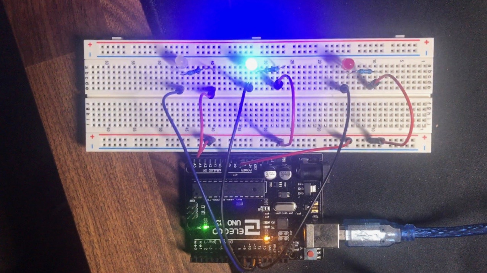
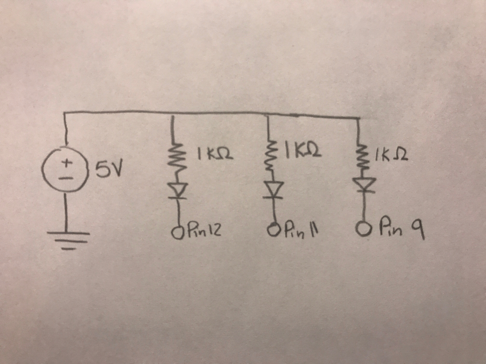

Erin Graves' Assignment 1!
Overview
Create a schematic for at least 3 LEDs connected to your Arduino, which you will implement as a circuit on your breadboard. Write firmware (in a .ino file) for the circuit that makes the LEDs blink in a pattern.
Code Snippet
I coded my LEDs so that they would alternate from red to blue to yellow and then reverse to cycle back to red. Circuit is wired such that Arduino acts as a current sink, not a source. The LED's/resistors are permanently connected to a 5V wire. When the Arduino pin is set HIGH, no current flows through LED because the voltage is the same on both sides. When Arduino pin is set LOW, current flows through the LED into the Arduino.
// the setup function runs once when you press reset or power the board
void setup() {
// initialize digital pin LED_BUILTIN as an output.
pinMode(12, OUTPUT); // initiates red LED
pinMode(11, OUTPUT); // initiates blue LED
pinMode(9, OUTPUT); // initiates yellow LED
digitalWrite(12,HIGH); // red LED starts turned off
digitalWrite(11,HIGH); // blue LED starts turned off
digitalWrite(9,HIGH); // yellow LED starts turned off
}
// the loop function runs over and over again forever
void loop() {
digitalWrite(12, LOW); // turn the red LED on (by setting pin 12 to ground)
delay(500); // wait for a half-second
digitalWrite(12, HIGH); // turn the red LED off by making the voltage LOW
delay(500); // wait for a half-second
digitalWrite(11, LOW); // turn the blue LED on (HIGH is the voltage level)
delay(500); // wait for a half-second
digitalWrite(11, HIGH); // turn the blue LED off by making the voltage LOW
delay(500); // wait for a half-second
digitalWrite(9, LOW); // turn the yellow LED on (HIGH is the voltage level)
delay(500); // wait for a half-second
digitalWrite(9, HIGH); // turn the yellow LED off by making the voltage LOW
delay(500); // wait for a half-second
digitalWrite(11, LOW); // turn the blue LED on (HIGH is the voltage level)
delay(500); // wait for a half-second
digitalWrite(11, HIGH); // turn the blue LED off by making the voltage LOW
delay(500); // wait for a half-second
}
Circuit
Schematic

RED
V = 5 - 1.8 = 3.2V
V = I x R = 3.2 = 0.02 x R
R = 3.2 / 0.02 = 160 ohms
BLUE
V = 5 - 3.3 = 1.7V
V = I x R = 1.7 = 0.02 x R
R = 1.7 / 0.02 = 85 ohms
YELLOW
(same as RED, 160 ohms)
Both the Red/Yellow and Blue values are below 1000 ohms so the 1000 ohms resistor is a safe choice.
Video